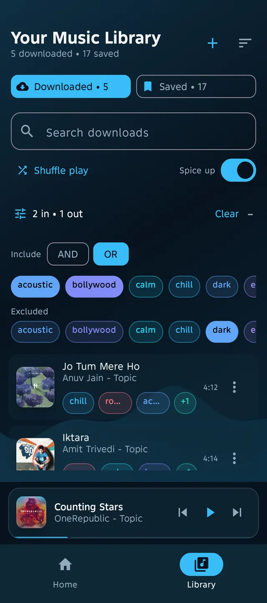
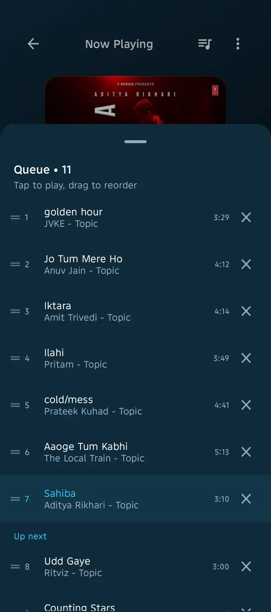
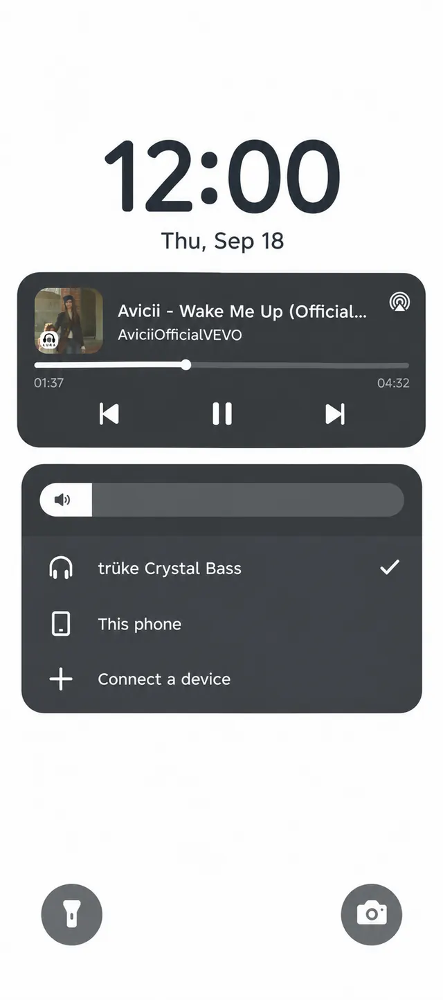

Home · Features
Features built for people who keep their music.
Aura is a lightweight, free offline music player for Android — no accounts, no ads, no tracking. Everything below runs on your phone.
Tag-powered library, not rigid playlists
Give every song as many tags as it deserves — gym, focus, 90s, acoustic — then combine tags with AND / OR filters, search by title or artist, and sort six ways (recent, oldest, title A–Z / Z–A, longest / shortest). One track can live in as many corners of your library as it belongs to.

Save audio in the background
Paste a link — single tracks, Shorts, or playlists of up to 50 — and keep downloading in the background, so leaving the screen never stops them. The download queue shows overall progress with per-song rows, cancel support, and a retry report that explains each failure in plain language. Every song is kept in its original quality — never converted or watered down.
- Playlist imports up to 50 tracks with per-video failure isolation
- Collapsible download queue with overall % and per-song rows
- Throttling-hardened retries with friendly, non-technical errors
Search it, play it instantly — or keep it
Look up any song and press play to hear it straight away without saving anything. Like it? Save it, and it joins your library. You can also save tracks as Saved to stream them later — they still start almost instantly.
A real queue with shuffle, repeat and Spice up
Play-next, reorder, shuffle and repeat off / one / all across a real queue. Shuffle play respects your active filters, and the Spice up switch keeps recommended picks flowing in behind the playlist you're on — playlist order always wins first.

Radio that learns you — on your device
What you play, replay and skip teaches Aura what you like — all privately on your phone. Top-hits, For-You and search taps start a radio session where every following song is picked for you — and the music never stops: every song lines up the next ones.
There when the app isn't
You get a media notification and Android lock-screen controls, a mini player you can swipe between songs, and full artwork-swipe track changes on Now Playing.

Back up, move on, restore
Save a backup file — your whole library or just the parts you choose — share it anywhere, then bring everything back (tags included) when you switch phones.
Yours to keep, theirs to own
Aura doesn't own any songs and claims no rights over them — all music and artwork belong to their respective artists, labels, and rights holders. It's simply your private player for offline listening.
Try every feature free.
No account, no ads, no tracking. Install the APK and start a library that stays yours. Aura is open source under MIT, developed by Ai-Chetan — contributors welcome.